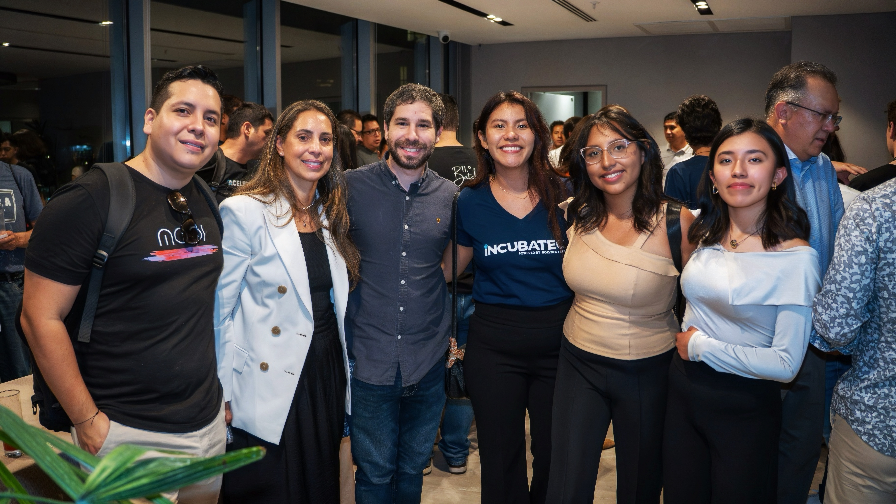
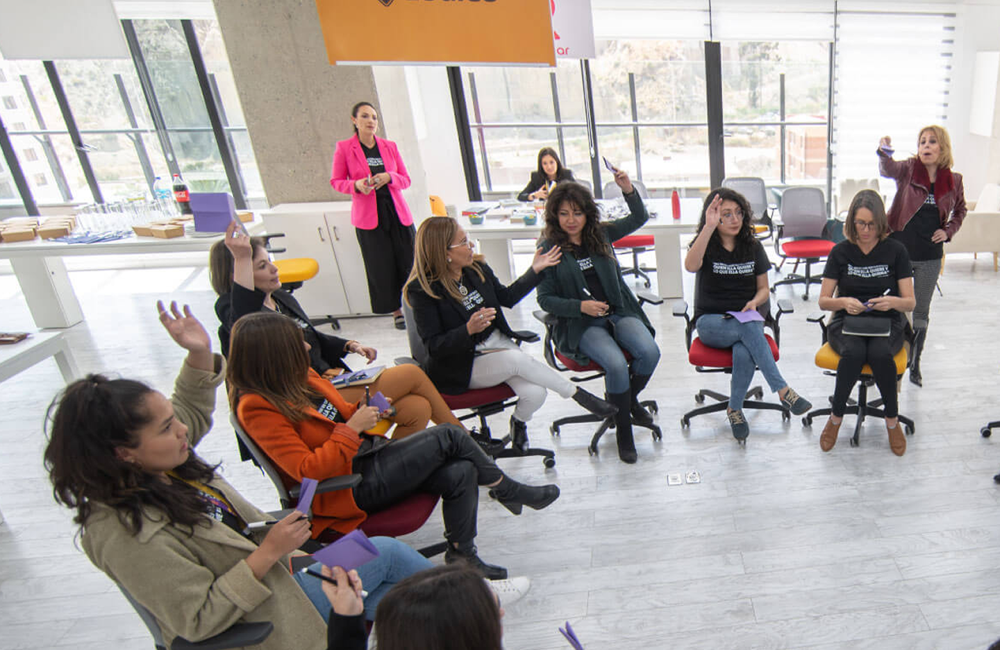
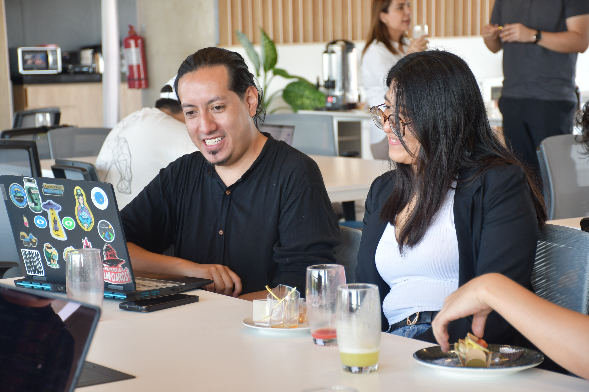

Toda startup comienza conuna idea
Incubatec, el programa de incubación de la UPB y Fundación Solydes, impulsa a estudiantes, graduados y emprendedores a transformar sus ideas en startups con impacto.
Oficinas en:
Powered by
Quiénes somos
INCUBATEC powered by Solydes + UPB
Nace desde la Universidad Privada Boliviana (UPB) con el propósito de impulsar una nueva generación de emprendedores y fortalecer el ecosistema de innovación y emprendimiento en Bolivia. Un espacio donde estudiantes, graduados de la UPB y emprendedores transforman problemas y oportunidades en soluciones innovadoras, sostenibles y con potencial de crecimiento.
Presente en los tres campus de la UPB —La Paz, Cochabamba y Santa Cruz—, el proceso de incubación conecta talento, conocimiento, innovación y emprendimiento, brindando a sus participantes metodologías, herramientas, mentoría y una comunidad para convertir sus ideas en proyectos con potencial.
Porque las ideas pueden nacer en cualquier lugar. Pero cuando encuentran el conocimiento, las herramientas, la comunidad y el impulso adecuado, pueden llegar mucho más lejos.
A quién está dirigido
Emprendedores en etapas tempranas
Buscamos emprendedores, profesionales, estudiantes y equipos que tengan una idea, problema identificado o proyecto en etapa temprana y quieran convertirlo en una solución tecnológica viable.
Idealmente los participantes deben:
- Haber identificado un problema real que quieran resolver.
- Contar con una idea inicial de solución, aunque todavía no esté completamente clara.
- Tener compromiso y disponibilidad para participar activamente durante todo el programa.
El programa
6 meses de acompañamiento
A través de un programa intensivo, los equipos reciben metodologías, mentoría especializada, herramientas tecnológicas y acceso a una comunidad emprendedora para validar un problema real, desarrollar un Producto Mínimo Viable (PMV), definir un modelo de negocio y generar sus primeras oportunidades comerciales.
Mentoría y asesoramiento
Conexión con expertos
Espacio de trabajo
Tu idea lista para salir al mercado en 6 meses.
Ecosistema emprendedor
Encuentros abiertos y networking
Encuentra el próximo evento en tu ciudad.
Ver calendario de eventosPreguntas frecuentes
Lo que suelen preguntarnos
¿Cuándo inicia el programa?
Realizamos dos programas al año. Nuestra próxima convocatoria inicia el 5 de octubre de 2026 (inscripciones abiertas hasta el 20 de septiembre).
¿Cuáles son los requisitos?
- Para iniciar (Etapa 1): no necesitas tener una empresa formada, haber vendido previamente ni contar con un mínimo de integrantes. Puedes postular de forma individual solo con una idea de negocio de base tecnológica.
- Para avanzar a la Etapa 2 (Incubación): se requiere un equipo de 2 a 5 personas, al menos un integrante enfocado en desarrollo/tecnología, compromiso para avanzar con tareas quincenales y validación con evidencia sólida.
¿El programa tiene costo?
No tiene ningún costo.
¿Cómo solicitar información o postular mi idea?
Solo escribe al WhatsApp de tu ciudad:
o déjanos tus datos en el formulario. Un responsable del programa te contactará con la información de la convocatoria vigente.
¿Cómo puedo postularme para ser mentor?
Puedes ponerte en contacto directamente a través de las redes sociales oficiales del programa (@incubatec.bo) o enviar una solicitud mediante el enlace principal (lnk.bio/incubatec.bo).



Contáctanos
Elige tu ciudad y escríbenos.
El programa desarrolla actividades presenciales simultáneas en La Paz, Cochabamba y Santa Cruz.
Queremos conocerte
Escríbenos
Si te interesa la innovación o te gustaría aportar, te invitamos a contactarnos.